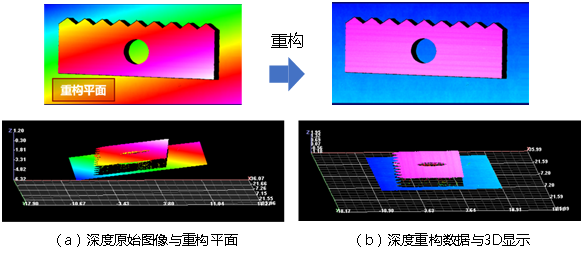
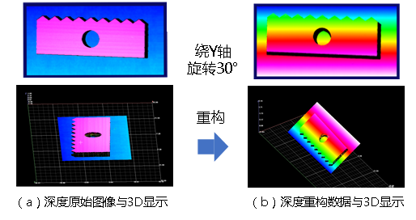
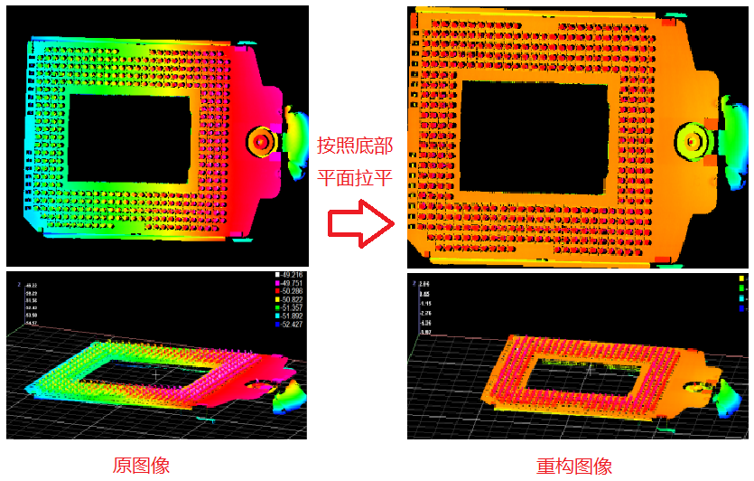
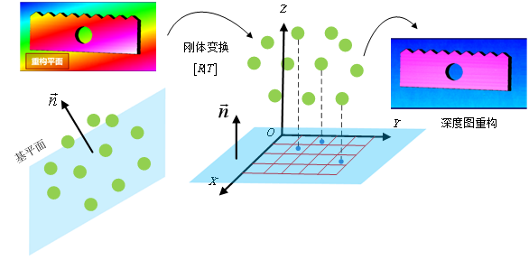
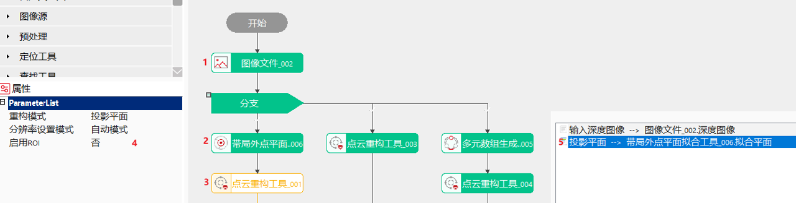

Công cụ tái cấu trúc ảnh độ sâu hỗ trợ hai chế độ “mặt phẳng chiếu” và “biến đổi chỉ định”.
Chế độ “mặt phẳng chiếu” là người dùng chỉ định mặt phẳng chuẩn chiếu, công cụ tái cấu trúc sẽ hiệu chỉnh mặt phẳng chuẩn được chỉ định về mặt XOY. Trong ảnh độ sâu sau khi tái cấu trúc, mặt phẳng chỉ định được hiệu chỉnh thành mặt phẳng ngang, giá trị Z của vật thể mục tiêu chính là chiều cao đến mặt phẳng, như hình bên dưới:

Chế độ “biến đổi chỉ định” là chuyển đổi thông tin đám mây điểm được biểu diễn bởi ảnh độ sâu theo phép biến đổi chỉ định, sau đó chiếu lại lên mặt phẳng XOY để tạo thành ảnh độ sâu mới, như hình bên dưới:

Trong quá trình camera quét, sản phẩm không nhất thiết nằm theo hướng mặt phẳng, do đó gây ra sai lệch độ chính xác cho module đo, hoặc không thể đo thống nhất. Vì vậy cần xử lý làm phẳng sản phẩm trước khi đo, để sản phẩm trong tất cả ảnh nằm trên cùng một mặt phẳng, từ đó có thể tiến hành đo thống nhất.

Công cụ tái cấu trúc ảnh độ sâu có hai chế độ là mặt phẳng chiếu và biến đổi chỉ định. Chế độ “mặt phẳng chiếu” là người dùng chỉ định mặt phẳng chuẩn chiếu, công cụ tái cấu trúc sẽ hiệu chỉnh mặt phẳng chuẩn được chỉ định về mặt XOY. Trước tiên dựa vào vector pháp tuyến của mặt phẳng và trục Z để lấy ma trận biến đổi vật rắn, thực hiện biến đổi vật rắn đối với đám mây điểm được biểu diễn bởi dữ liệu độ sâu gốc, sau đó ánh xạ lại đám mây điểm sau biến đổi để xây dựng ảnh độ sâu mới. Trong ảnh độ sâu sau khi tái cấu trúc, mặt phẳng chỉ định được hiệu chỉnh thành mặt phẳng ngang, giá trị Z của vật thể mục tiêu chính là chiều cao đến mặt phẳng. Chế độ “biến đổi chỉ định” là chuyển đổi thông tin đám mây điểm được biểu diễn bởi ảnh độ sâu gốc theo phép biến đổi chỉ định, sau đó chiếu lại lên mặt phẳng XOY để tạo thành ảnh độ sâu mới.


Fitting mặt phẳng chiếu
Việc fitting mặt phẳng chiếu vui lòng tham khảo sổ tay hướng dẫn thao tác của các công cụ fitting mặt phẳng như fitting mặt phẳng, fitting mặt phẳng 2, fitting mặt phẳng có điểm ngoại lai.
Không có
| Tên tham số | Mô tả tham số |
|---|---|
| Bật ROI | Chọn “Có”, thì sử dụng ROI hình chữ nhật. |
| ROI hình chữ nhật | Có hiệu lực khi tham số bật ROI chọn Có, người dùng sử dụng ROI hình chữ nhật để chỉ định vùng tái cấu trúc. |
| Chế độ tái cấu trúc | Chế độ mặt phẳng chiếu: chiếu lại tất cả các điểm trong ảnh độ sâu lên mặt phẳng chỉ định để tạo thành ảnh độ sâu mới; chế độ biến đổi chỉ định: biến đổi tất cả các điểm trong ảnh độ sâu theo phép biến đổi chỉ định để tạo thành ảnh độ sâu sau biến đổi; chế độ bù cục bộ: thực hiện bù cục bộ theo hướng Z cho tập điểm trong ROI hình chữ nhật affine theo giá trị bù tương ứng, đồng thời xuất ảnh kết quả sau khi bù; |
| Chế độ thiết lập độ phân giải | Chọn chế độ thiết lập độ phân giải thủ công/tự động, ở chế độ thủ công có thể nhập độ phân giải theo hướng Z |
| Độ phân giải hướng Z | Phạm vi chiều cao vật lý hiển thị trong ảnh độ sâu là có giới hạn, độ phân giải hướng Z có thể điều khiển phạm vi chiều cao hiển thị. Giá trị độ phân giải càng lớn, phạm vi giá trị vật lý hiển thị càng lớn, nhưng chi tiết dễ bị mất; giá trị độ phân giải càng nhỏ, phạm vi giá trị vật lý hiển thị càng nhỏ, chi tiết có thể được làm nổi bật. |
| Bật tính toán song song | Có bật tính toán song song hay không, khi chọn Có, thuật toán sẽ bật phương thức tính toán song song OpenMp, có thể nâng cao tốc độ tính toán, nhưng có thể xuất hiện tình trạng thời gian xử lý không ổn định; khi chọn Không, thuật toán sẽ tắt tính toán song song OpenMp. |
| Phần trăm số luồng | Thiết lập phần trăm số luồng của tính toán song song, phạm vi hợp lệ là (0, 0.75], tương ứng biểu thị phạm vi phần trăm (0%, 75%]. |
| Ảnh độ sâu đầu vào（chuỗi dữ liệu） | Nhập ảnh độ sâu cần tái cấu trúc. |
| Biến đổi tuyến tính 2D（chuỗi dữ liệu） | Phép biến đổi tịnh tiến, xoay, co giãn của đối tượng so với template. |
| Mặt phẳng chiếu（chuỗi dữ liệu） | Chính là mặt phẳng dùng để chiếu khi tái cấu trúc. Bật khi chế độ tái cấu trúc là mặt phẳng chiếu. |
| Mảng bù cục bộ（chuỗi dữ liệu） | Mảng được tạo thành từ các giá trị bù theo hướng Z của tập điểm trong từng ROI hình chữ nhật affine. Bật khi chế độ tái cấu trúc là bù cục bộ. |
| Góc xoay quanh trục x/y/z | Lần lượt điều khiển góc xoay của ảnh sau biến đổi so với ảnh gốc trên các trục x/y/z, phạm vi tham số [-360,360], đơn vị: độ（°） |
| Nhiều ROI hình chữ nhật affine | Center: tọa độ tâm hình chữ nhật, Size: chiều dài và chiều rộng, Rotation: góc xoay, Skew: góc shear |
| Tên tham số | Mô tả tham số |
|---|---|
| Ảnh độ sâu đầu ra | Ảnh độ sâu sau khi tái cấu trúc được xuất ra |
| Kết quả thực thi | Kết quả thực thi của công cụ |
| Thời gian thực thi | Thời gian thực thi của công cụ |
参见“\Samples\3D\深度图\深度图像重构工具.gvp”。